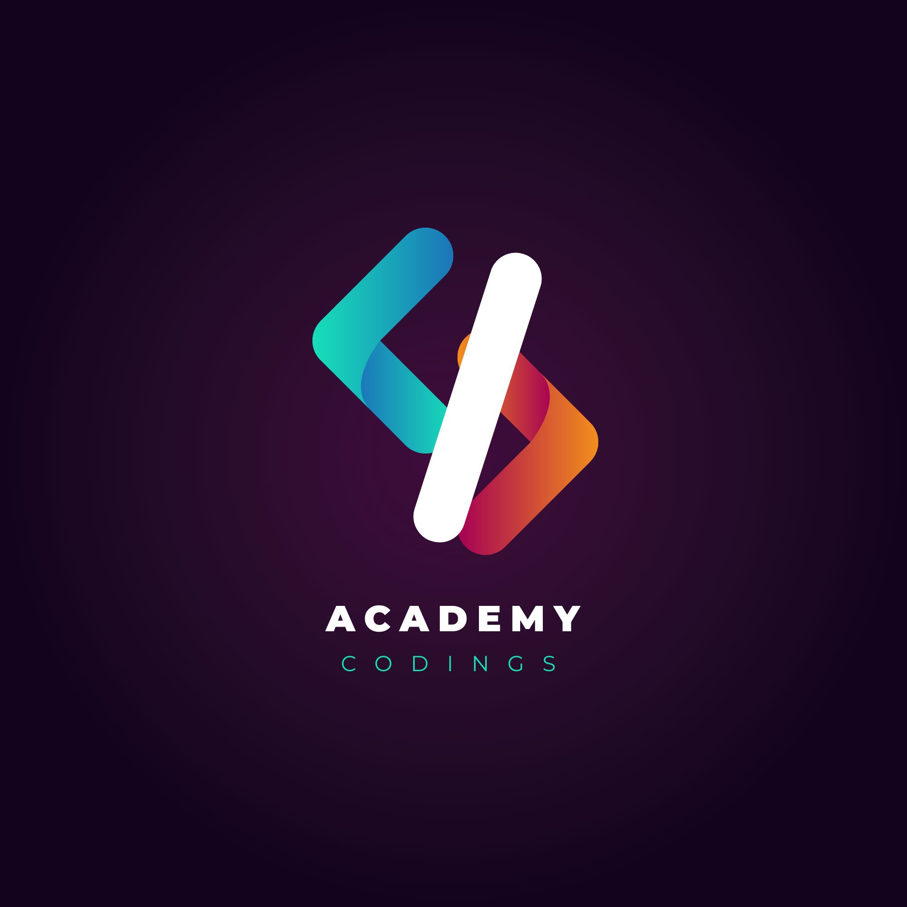

Introduction About Academy Coding ⩟
EMAIL FOR
DEVELOPERS
Ready to become a developer? Academy Coding offers hands-on lessons, real-world projects, and a community that supports your growth. Learn, build, and launch your coding career with us!
